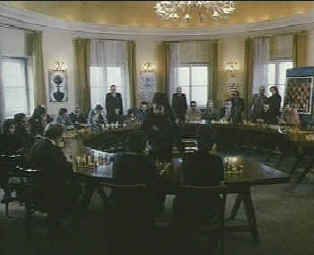
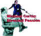

| Decalogue/A,C |
| Image/1988/560m/FS 1.33 |
The
brilliant series of ten films directed and co-written by
Krzysztof Kieslowski for Polish television in 1988 is an
absolute must for lovers of foreign film. Each of these
"slice of life" films is supposedly based on one of
the Ten Commandments, though not necessarily in order.
Personally, I chose to ignore the premise and simply watch each
episode for its intrinsic value, without trying to figure out
how it related to the tablets of Moses.
The initial segment tells the
story of a brilliant child, a computer prodigy, whose
wonderful relationship with his father plays out like an
exquisite violin sonata. The first was the best for me,
though each tale is thoroughly engrossing. The final tale plays
out with tongue in cheek as two brothers, vastly different in
their life styles, inherit a stamp collection from their
deceased father. There's a wonderful story about a young peeping
tom and another about a mother trying to reclaim her
daughter.
 |
| Competing in the arena of the mind. ©Image |
The variety
of tales is interesting. Almost all of the films focus on an
intimate level. Personal relationships shape the 56 compressed
emotional film minutes. No, each ensuing segment is not better
than the last, but the standard of storytelling is remarkably
high and focused. You are pulled into these tales immediately.
Kieslowski wastes no time before focusing in on the life forces
surrounding these character. There are a few recurring character
that make minor appearances in one or other of the stories, and
there's even a delicious oral retelling of one of the tales in a
class room setting, but each stands on its own.
Kieslowski
chose to use a different cinematographer for each episode to
find a fresh look, though I found little distinction in
photographic style. The strong unifying elements are the powerful
use of close-ups in every film, as well as the scores from
insightful Zbigniew Preisner. Kieslowski likely never strayed from close quarters
with each of his camera artists.
This is treasure chest of
collected stories from Kieslowski and co-writer Krzysztof
Piesiewicz. Though the quality of the DVD is not of the first
order, this is a must-have set and lack of DVD brilliance does
little to diminish the thorough pleasure of experiencing The
Decalogue. Delivered by Image in a two DVD set, the
transfers are no more than serviceable. Quality from episode to
episode differs slightly, and only one, episode 5, "Thou
Shalt Not Kill," is truly sub-par. The DVD quality is
likely limited by the source elements. Kieslowski's quick shoot
for these ten films perhaps impacted the level of production
gloss. White English subtitles appear on the 1.33 image.
Selections from the feature archive include articles on Akira Kurosawa, Frank Darabont, Blonde Bimbos, Hollywood Street Gangs, or Vietnam: The Hollywood Pariah, and many more...


The Movie Poster Archive include extensive poster images from the films of stars like Susan Hayward, Kirk Douglas, Katharine Hepburn and many more. This month's featured star is Clark Gable.

 Gary
Morris's insightful publication Bright Lights Film Journal
turns the celluloid in films from a unique perspective. Click on the image above for more pure movie views.
Gary
Morris's insightful publication Bright Lights Film Journal
turns the celluloid in films from a unique perspective. Click on the image above for more pure movie views.
 Sight
and Sound Magazine is the venerable voice of The British Film
Institute. The site includes articles and film reviews. A great
resource in print and on the Internet.
Sight
and Sound Magazine is the venerable voice of The British Film
Institute. The site includes articles and film reviews. A great
resource in print and on the Internet.

You won’t want to miss the
online iF Magazine. You may have guessed iF stands for
independent film.
 Frank
Darabont is the cover interview in the current online issue of
Fade-In Magazine. Check it out along with other savvy features of
this excellent book
Frank
Darabont is the cover interview in the current online issue of
Fade-In Magazine. Check it out along with other savvy features of
this excellent book